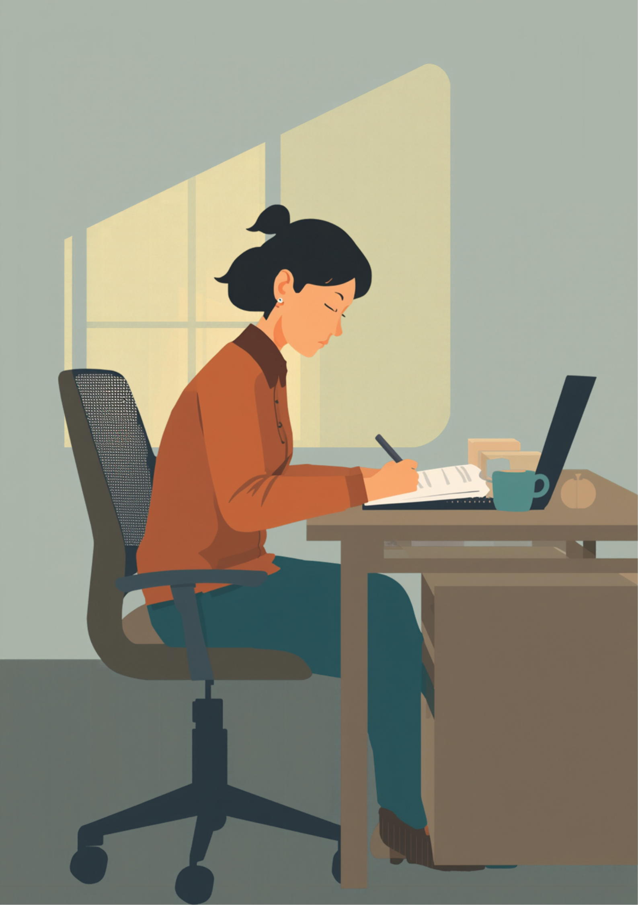
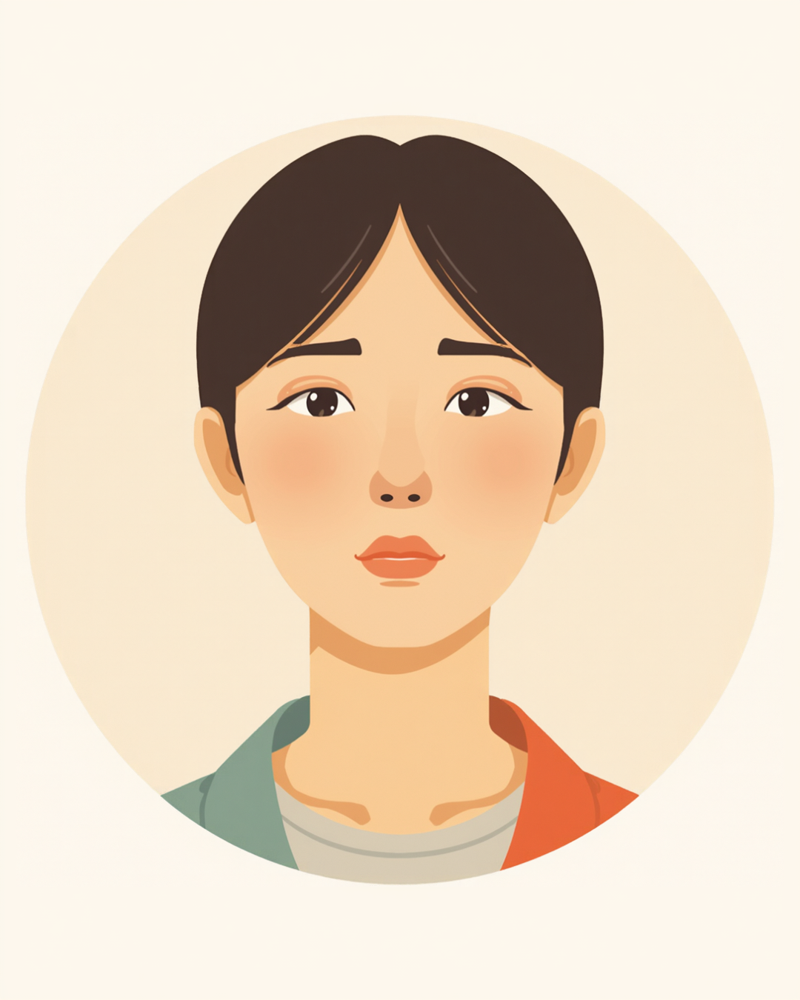

「特に問題なし」。面談から戻って、記録の入力欄にその一行を打ち込んだところで、指が止まった。さっきまで三十分近く話していたはずなのに、書けることがこれしかない。
PR



三十分の話を、三行にする手が止まった
「特に問題なし」と書いた三十分
その日の面談は、いつもよりよく喋ってくれた回だったと思う。最近眠れていないこと、朝起きてから家を出るまでにかかる時間が伸びていること、職場の人間関係で気になっていること。話は脱線しながらも、三十分近く続いた。
面談を終えて、記録用のパソコンに向かった。項目は決まっている。体調、生活リズム、就労意欲、特記事項。話してもらった内容を思い出しながら打ち込もうとして、結局書いたのは「体調は概ね安定。本人の就労意欲は高い」という一行だった。眠れていないことも、朝の話も、人間関係の話も、その一行の裏に消えていった。
!
この記事は就労支援員おのざる自身が経験したことをもとに、複数の場面や時期を組み合わせて書いています。特定の一人を指すものではなく、記録の書き方や運用は事業所によって異なります（2026年9月時点の情報です）。
書きながら、うっすら違和感はあった。でもその日はほかにも面談が控えていたし、決まった書式に決まった言葉を当てはめる作業は、慣れてしまえば数十秒で終わる。違和感を覚える余裕すら、その場ではあまりなかった。
定型句が便利だった理由

支援の記録は、事業所によって書式や項目が定められていることが多く、限られた時間の中で多くの相談者の状況を残していく必要があります。定型的な表現が使われやすい背景には、そうした事情もあるとされています。まめざる
「体調は概ね安定」「本人の就労意欲は高い」。こうした言葉を選ぶのには理由があった。間違ったことを書かずに済むからだ。断定を避け、悪く言えば当たり障りのない言葉を選んでおけば、あとで読み返した誰かを困らせることもない。何十人分もの記録を書く中で、そういう言葉は自然と手に馴染んでいった。
正直に言うと、便利だった。話の内容を丁寧に思い出して言葉にするより、決まった型に流し込むほうが早い。わかった気になることは、こちらにとって都合のいい終わり方でもあった。
「面談で結構しんどい話をしたはずなのに、次に会ったとき支援員さんが『順調そうで良かったです』みたいな感じで来て、あれ、ちゃんと伝わってなかったのかもって思ったことがあります。責めてるわけじゃなくて、忙しいのは分かるんですけど、こっちは結構勇気出して話したんですよね。それで、次からはもう当たり障りのないことしか話さなくなりました。」
30代・女性（精神障害・事務職／自分が関わった相談者の一人）
片方に積み上がった話が、もう片方では一行に収まってしまう
i
記録の詳しさは、事業所の書式や支援員の裁量によって差があるとされています。定型的な表現そのものが悪いわけではなく、実際の状態とのズレに気づける仕組みがあるかどうかが大切だと考える支援員は少なくないようです。
数か月後に分かった、書かれていなかったこと
その相談者の様子が変わったのは、数か月後だった。それまで毎回「順調です」「特に困っていません」と答えていたのが、ある日の面談で急に涙ぐみながら、実は最初の面談のころから朝起きるのがつらかったこと、それを言い出せずにずっと過ごしていたことを話してくれた。
記録を読み返してみた。「体調は概ね安定」という一行が、何回分も並んでいた。数か月分の記録を見返しても、その人が抱えていた朝のつらさに気づけそうな一文は、どこにもなかった。
面談での聞き方を変えてから（複数の場面を組み合わせた一例）

相談者
面談で話したこと、どうせ「意欲は高い」みたいな一行でまとめられるんだろうなって思うと、正直あんまり話す気になれないときがあります。
まめざる
その感覚、支援員側にも伝わりにくい後ろめたさとしてあると思います。実際、便利な言葉で片付けてしまうことはあるかもしれません。
相談者
じゃあ、細かく話しても意味ないってことですか。
まめざる
そうではなくて、話してもらった内容がそのまま一行になるわけじゃなく、次にどう聞くかの材料になっているというのが実際に近いと思います。ズレに気づいたら直せるように、具体的な場面を聞かせてもらえると助かります。
一行にした瞬間、消えていくもの
定型句が悪いわけではないと、今でも思う。ただ、一行にまとめた瞬間、その裏にあった具体的な場面や言葉の温度は消えてしまう。そして書いた本人は、まとめた達成感のようなもので、わかった気になってしまう。記録が薄くなることより、その「わかった気」のほうが厄介だったのだと、あとから気づいた。
今も、完全には抜けきれていない
あの経験のあと、記録の書き方を少しだけ変えた。とはいえ、すべての面談を逐語で残せるわけではないし、定型句を完全になくすこともできていない。忙しい日には、今でも似たような一行を書いてしまうことがある。
- 「概ね安定」と書きそうになったら、具体的にどの場面がそう見えたのか一言だけ添える
- 本人が話した言葉を、できるだけそのままの形で一つだけ残しておく
- 「特に問題なし」が何回も続いたときは、聞き方そのものを変えてみる
- 書き終えたあと、「これで本当にわかったつもりになっていないか」を一度だけ自分に聞く
記録をきれいにまとめられることと、相手の状態を理解できていることは、必ずしも同じではないとされています。まとめる力があるからこそ、わかった気になりやすいという面もあるようです。まめざる
便利さと複雑さの間にあった溝は、今も完全には埋まっていない
三十分の話を、三行にまとめること自体は悪いことではないと思う。ただ、まとめた瞬間に「わかった」と思い込んでしまうことのほうが、ずっと危ういのだと今は思っている。
よくある質問
Q. 就労支援の面談で話した内容は、そのまま記録に残るのですか？
事業所によって運用は異なりますが、面談の内容は要点をまとめた形で記録に残されることが一般的だとされています。話したことすべてが逐語で残るわけではなく、支援員がその場で重要だと判断した部分が中心になる場合が多いようです。
Q. 支援員に「特に問題ない」と思われている気がして不安です。どう伝えればいいですか？
大きな変化がなくても、小さな違和感や迷いを一言添えてみることが助けになる場合があります。「今のところ大丈夫だけど、実はここが気になっている」のように具体的な場面を添えると、支援員側も記録の書き方を見直すきっかけになりやすいようです。
Q. 支援員も、相談者の状態を見誤ることがあるのですか？
支援員によって差はありますが、限られた面談時間の中で状況を判断する以上、見誤りが起こり得ることは否定できないとされています。だからこそ一度の判断を記録にそのまま固定せず、定期的に見直す姿勢が大切だと考える支援員は少なくないようです。
Q. 記録や報告書の書き方に、決まったルールはあるのですか？
事業所ごとに書式や項目は定められていることが多いものの、どこまで具体的に書くかは担当する支援員の裁量に委ねられている部分もあるとされています。統一されたルールがあるわけではないため、事業所によって記録の詳しさに差が出ることもあるようです（2026年9月時点の情報です）。
PR


一人で抱え込む前に、今の気持ちを話してみませんか
「まだ迷っている」段階でも大丈夫です。mimemimeの無料相談は、今の状況の整理から一緒に始められます。
無料で話してみる
この記事に、聞いてみたいことはありますか？
「自分の場合はどうなんだろう」と思ったことを、気軽に書いてみてください。いただいた質問は個別にお返事したうえで、匿名で記事にすることがあります。
おのざる
mimemime代表。就労支援の現場経験をもとに、障がいのある方の働く不安に寄り添う記事を執筆。